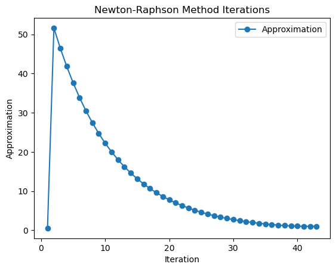

import matplotlib.pyplot as plt
import numpy as npNewton Raphson Method
The Newton-Raphson method is another iterative numerical technique for approximating the roots of functions
Algorithm Steps:
- Start with an initial guess x_0 .
- Calculate the next value: \[ x_{i+1} = x_i - \frac{f(x_i)}{f'(x_i)} \] - If |x_{i+1} - x_i| < tol, consider x_{i+1} as the root approximation. - Repeat until convergence or a maximum number of iterations.
Import Libraries
Find nth derivative of a fxn at point a
def derivative(f, x, n=1):
if n == 0:
return f(x)
else:
h = 1e-7
df = (derivative(f, x + h, n - 1) - derivative(f, x, n - 1)) / h
return dfFunction to find the approx root
def method(func, a, tol=1e-6, max_iter=100):
x = a
iter_count = 1
x_next = np.inf
Ea = 100
iteration_data = []
print("Iteration | x | f(x) | Ea (%)")
print("-----------------------------------------")
while abs(x_next - x) > tol and iter_count <= max_iter:
print(f"{iter_count:9d} | {x:.6f} | {func(x):.6f} | {Ea:.3f}")
iteration_data.append([iter_count, x, func(x),Ea])
x_next = x
x = x - func(x)/derivative(func, x)
Ea = abs((x - x_next) / x) * 100
iter_count += 1
return x_next, np.array(iteration_data)Defining the Fxn
def function(x):
return x**10 - 1Initializing the variables
a = 0.5
tolerance = 1e-8FInding the approx value
root, iteration_data = method(function, a, tol=tolerance)
print("")
print("Approximate root of f(x):", root)
print("Function value f(x) at root:", function(root))Iteration | x | f(x) | Ea (%)
-----------------------------------------
1 | 0.500000 | -0.999023 | 100.000
2 | 51.649954 | 135113690901380928.000000 | 99.032
3 | 46.484958 | 47111232049568312.000000 | 11.111
4 | 41.836463 | 16426671305578640.000000 | 11.111
5 | 37.652816 | 5727626277965569.000000 | 11.111
6 | 33.887535 | 1997099844284967.750000 | 11.111
7 | 30.498781 | 696345678907932.125000 | 11.111
8 | 27.448903 | 242800732193370.531250 | 11.111
9 | 24.704013 | 84659383044679.875000 | 11.111
10 | 22.233612 | 29518902554876.765625 | 11.111
11 | 20.010251 | 10292605236473.214844 | 11.111
12 | 18.009226 | 3588809676042.216309 | 11.111
13 | 16.208303 | 1251340610956.026611 | 11.111
14 | 14.587473 | 436315510284.655945 | 11.111
15 | 13.128726 | 152133815904.294373 | 11.111
16 | 11.815853 | 53045783355.130203 | 11.111
17 | 10.634268 | 18495921653.552906 | 11.111
18 | 9.570841 | 6449129365.952678 | 11.111
19 | 8.613757 | 2248672469.611401 | 11.111
20 | 7.752381 | 784063648.806846 | 11.111
21 | 6.977143 | 273386108.233308 | 11.111
22 | 6.279429 | 95323848.705180 | 11.111
23 | 5.651486 | 33237373.351744 | 11.111
24 | 5.086338 | 11589156.292802 | 11.111
25 | 4.577704 | 4040889.081908 | 11.111
26 | 4.119934 | 1408970.796211 | 11.111
27 | 3.707941 | 491277.536645 | 11.111
28 | 3.337147 | 171297.643950 | 11.111
29 | 3.003435 | 59727.540221 | 11.111
30 | 2.703096 | 20825.445087 | 11.111
31 | 2.432800 | 7261.121147 | 11.111
32 | 2.189553 | 2531.533037 | 11.109
33 | 1.970684 | 882.427366 | 11.106
34 | 1.773839 | 307.419794 | 11.097
35 | 1.597030 | 106.927412 | 11.071
36 | 1.438807 | 37.021194 | 10.997
37 | 1.298711 | 12.649730 | 10.787
38 | 1.178354 | 4.161293 | 10.214
39 | 1.083349 | 1.226822 | 8.770
40 | 1.023665 | 0.263504 | 5.831
41 | 1.002316 | 0.023403 | 2.130
42 | 1.000024 | 0.000239 | 0.229
43 | 1.000000 | 0.000000 | 0.002
Approximate root of f(x): 1.0000000025885265
Function value f(x) at root: 2.588526526459134e-08Plotting the values
plt.plot(iteration_data[:, 0], iteration_data[:, 1],
marker='o', linestyle='-', label='Approximation')
plt.xlabel('Iteration')
plt.ylabel('Approximation')
plt.title('Newton-Raphson Method Iterations')
plt.legend()
plt.show()
Error Estimation
\[ E_{i+1} = -\frac{f''(x)}{2 \cdot f'(x)} \cdot E_i^2 \]